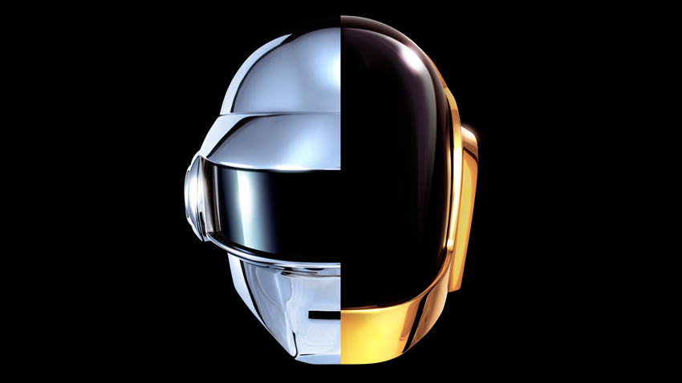
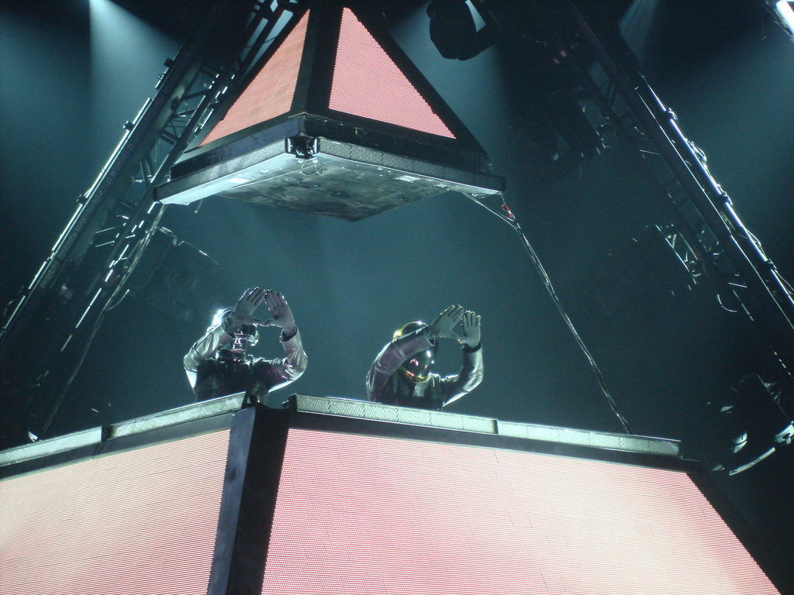

1993–2021
If love is
the answer,
you’re home.
Basement energy. Robot attitude. From Homework’s raw loops to Discovery, Human After All, and the pyramid: get into the whole world of Daft Punk.
EXPLORE THE MUSIC ↗WATCH & LISTEN
